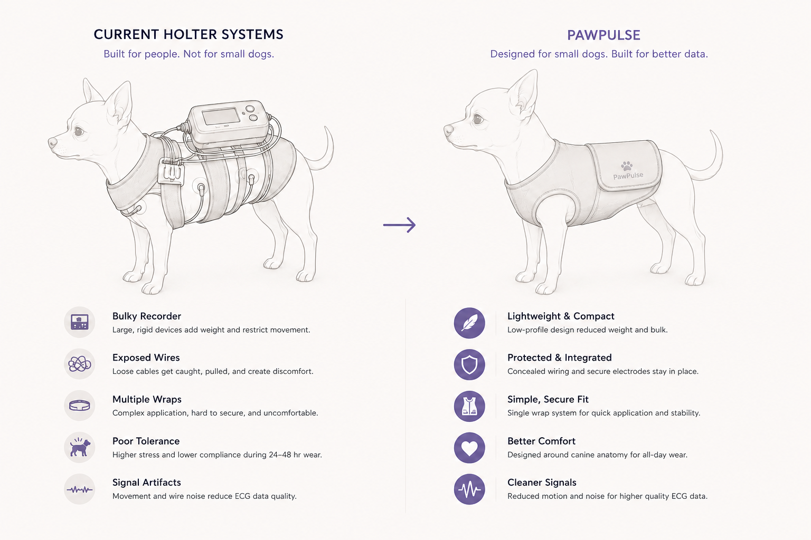
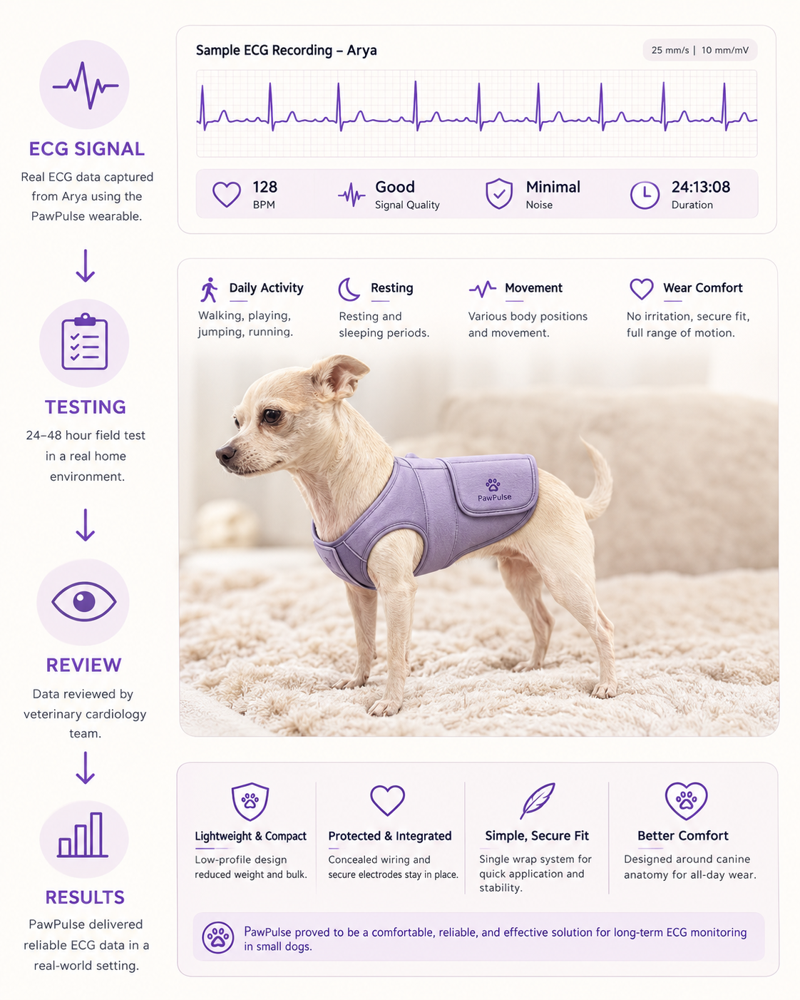

Veterinary expertise
A veterinary cardiologist identified electrode detachment, inconsistent contact, and movement artifact as recurring causes of poor long-term recordings—especially on small, rounded, or active patients.
Veterinary wearable system
A pet-friendly Holter-monitoring system designed to improve comfort, electrode stability, and ECG reliability for small-breed dogs.
PawPulse brings wearable construction, embedded electronics, veterinary workflow research, and extended home testing into one coordinated monitoring system.

The Challenge
Small dogs leave limited space for electrodes, wiring, a recorder, and protective wrapping.
Bulky hardware and exposed cables can restrict movement, loosen electrode placement, and introduce motion artifacts during long-term monitoring.

Research
I combined an expert interview, workplace observation, precedent analysis, and hands-on testing to understand where current Holter workflows break down for small dogs.
The research consistently pointed to the same connected problem: movement, fit, exposed wiring, and unstable electrode contact can reduce comfort while also affecting recording quality.
A veterinary cardiologist identified electrode detachment, inconsistent contact, and movement artifact as recurring causes of poor long-term recordings—especially on small, rounded, or active patients.
I reviewed the full monitoring workflow: shaving and preparing the skin, placing electrodes, routing leads, attaching the recorder, wrapping the patient, and managing the system at home.
Bulky recorders, exposed wires, multiple protective layers, limited body area, and unnoticed lead failure created challenges for patients, owners, and veterinary teams.
The system needed to be lightweight, adjustable, open beneath the abdomen, stable during movement, protective of the hardware, clear in its status feedback, and capable of reliable local ECG recording.
Key insight
Fit, motion, pocket placement, and wire routing directly influence signal reliability. The wearable and electronics had to be designed as one connected system—not as separate accessories.
System Architecture
The embedded system captures, conditions, processes, and stores the ECG signal before clinical review.
Electrodes feed the AD8232 analog front end. The ESP32 manages acquisition and data handling, while microSD storage preserves the recording locally. A rechargeable battery powers the system, with Bluetooth available for wireless communication.

Wearable Design
The open underside, adjustable wrap, and longer back panel support movement without enclosing the abdomen.
The design balances fit, gentle compression, access, and device protection. The chest structure supports electrode positioning, while the back pocket carries the enclosed recorder away from the animal’s skin.

Development Process
Each iteration answered a different question about coverage, adjustability, movement, and secure placement.
Early patterns established basic proportions. Later versions refined the wrap structure, arm openings, dorsal coverage, pocket placement, and the relationship between comfort and stability.

Validation
Arya, my Chihuahua, wore the final prototype for approximately 22 hours while ECG data was recorded.
The study evaluated comfort, mobility, device retention, cable behavior, recording continuity, and whether the captured ECG was clear enough for veterinary review.

The visual summarizes the test workflow and recorded output. It is a portfolio communication graphic, not a diagnostic report.
Technical Contributions
PawPulse required me to work across research, soft goods, electronics, software, testing, branding, and documentation.
Rather than contributing one isolated piece, I was responsible for connecting the entire experience and making the design decisions understandable to both technical and nontechnical audiences.
Expert interview, clinical workflow observation, precedent review, and requirements synthesis.
Pattern development, material selection, fit refinement, compression, adjustment, and pocket placement.
Arduino-based prototyping, ESP32 development, AD8232 ECG acquisition, microSD logging, and status feedback.
Enclosure development, component layout, physical assembly, soldering, cable routing, and iterative construction.
Bench validation, fit studies, movement observation, extended home wear, and review of recorded ECG output.
PawPulse identity, visual communication, demo storytelling, technical documentation, and portfolio presentation.
Reflection
PawPulse taught me to treat fit, movement, materials, electronics, and clinical workflow as one connected system.
The most valuable part of the project was moving from assumptions into physical testing. Future development would focus on a smaller enclosed recorder, refined manufacturing patterns, additional body shapes, and formal signal-quality comparison.